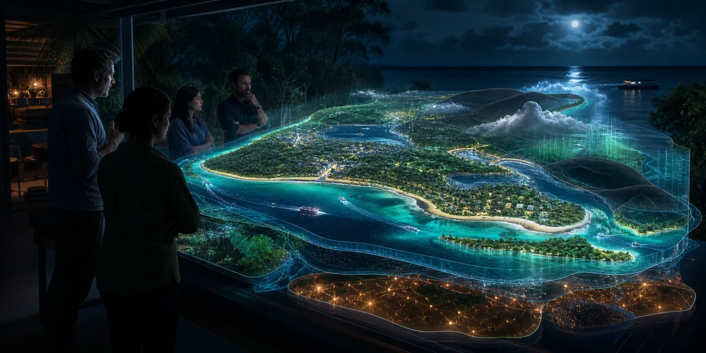

Verse Box: Proposal for a Public Trial, Version 1
The supplied trial proposal informs supported personal computing and learning. The link opens its public project counterpart; it is not a claim that this building hosts an operating trial.

Exploring a civic establishment
Explore related proposals and source repositories within a system in development, including an unconfirmed Dunwich concept.
System in development · Brisbane · 8 November 2026
AI-generated concept from Ready S.E.T. Co-op Cultural Intelligence Node.
Image credit ↗Possible connections
The supplied documents and websites are part of a much larger body of developing work. They offer ideas to explore alongside the possibilities of a Brisbane civic establishment.
Dunwich is an idea in development, with no confirmed programme there. The cultural-intelligence-node material explores possible computing, cultural and co-operative connections on Minjerribah. The installation, learning, enterprise, care and other material is also developing.
A published website or repository makes an idea available to examine. It does not make a place, programme, participant or partnership confirmed. Which connections could be useful here remains open.
Developing project library
The supplied trial proposal informs supported personal computing and learning. The link opens its public project counterpart; it is not a claim that this building hosts an operating trial.
Personal and community capability before, during and after disaster, beginning on Minjerribah and in Redlands. The public planning workshop provides context; proposed functions here are subject to local relationships and practical requirements.
Developing the qualified self through travel, personal intelligence, music, sport, culture and nature. Links to the public counterpart project.
Authored proposal concerning dementia, disability, ageing, chosen personal records and continuity of human support. The public counterpart describes proposed uses, not demonstrated clinical outcomes.
Personal understanding, rights, interests, trusted adults and opportunities for adulthood. The linked public guide is the project counterpart; its inclusion does not establish a commissioned care service.
The public source library records this authored treaty submission as regional relationships, ownership, workforce and public-purpose context. It does not establish an international partnership for this building.
An authored argument for distributed civic AI capability. The linked source-library entry identifies its public edition. Distinct from the Senate AI and data centres submission of 21 August.
The supplied revised paper connects personal intelligence, shared capability and lives worth choosing. The public library provides related authored material; public editions can differ from the supplied October revision.
Women developing executive leadership, enterprise and decision-making capability. The public planning library distinguishes proposed programmes, premises and funding from commitments.
Personal Aura development, interdisciplinary understanding, critical engagement with AI and civic capability. The linked public learning project is a counterpart to the supplied reading collection.
Experience design, personal records, hardware pathways, mineral craft and scientific exploration. Research and health-related concepts are design proposals, not evidence of efficacy or an operating facility here.
Community-led participation, shared capability and recognised voluntary human contribution. Current direction governs interpretation: C-Hour has no monetary equivalent, with money and outcomes recorded separately.
Editable physical scenarios for energy, machinery, materials, lifetime and Australian infrastructure. Scenario inputs are not a survey of 433 Logan Road.
A developing Dunwich local-node concept for cultural collaboration, workloads and co-operative relationships. There is no confirmed Dunwich programme. Possible places, participants and connections remain part of the wider system in development.
Public directory and lineage of connected projects. A project listing is not evidence of a commissioned service or a commitment to integrate every project at this building.
What travels between places
A worked example, training material, a measured result and the correction that improved it.
Explore →A defined compute job, a shared project or an agreed support relationship.
Explore →Mentors, peers, cultural collaboration and organisations choosing to work together.
Explore →